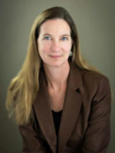
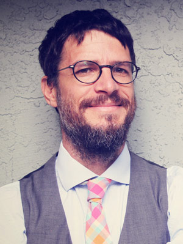

2018 Founders Celebration

Please join us for Founders Celebration 2018.
Thank you for your interest in the Founders Celebration 2018. At this time online registration is closed, but if you're interested in attending please contact the Special Events Office at (831) 459-5003 or specialevents@ucsc.edu.
-
- Saturday, Oct 20, 2018
- Porter Dining Hall
- Reception 6 p.m.
Dinner 7 p.m. - $150 per person
- Table, individual, and other sponsorship opportunities available
Founders Celebration Dinner
In honor of our Year of Alumni, we will take this moment to celebrate alumni and faculty who exemplify the best of UC Santa Cruz.
Truth, democracy, and the power of the pen: Award-winning alumni journalists will discuss the news industry, the changing perception of facts, and the current explosive political landscape.
The awards presentation will include:
-
-
-
Fiat Lux Award
 John Laird (Stevenson ’72, politics)
John Laird (Stevenson ’72, politics)A trailblazing public servant
John Laird was appointed California Secretary for Natural Resources by Governor Jerry Brown on Jan. 5, 2011. He has spent over 40 years in public service, including 23 years as an elected official. Read more »
-
Faculty Research Award

Lise Getoor
Data visionary
Lise Getoor is a professor in the Computer Science Department at UC Santa Cruz and founding director of the UC Santa Cruz Data, Discovery, and Decisions (D3) Data Science Research Center. Read more »
-
Alumni Achievement Award

Natalie Batalha (Ph.D. ’97, astrophysics)
Looking for life
Natalie Batalha is an astrophysicist at NASA Ames Research Center and served as the science lead for NASA's Kepler Mission from 2011 to 2017. She holds a bachelor's degree in physics from UC Berkeley and a doctoral degree in astrophysics from UC Santa Cruz. Read more »
-
Alumni Journalists Panel
Martha Mendoza (Kresge ’88, journalism and education)
Associated Press correspondent and two-time Pulitzer Prize winner
Writing wrongs
Martha Mendoza is a correspondent for the Associated Press, focusing on technology, breaking news, enterprise and investigative reporting from Silicon Valley. Her investigative reports have won numerous awards and prompted Congressional hearings, Pentagon investigations, and White House responses. Read more »
-
 Carrie Kahn (College Eight/Rachel Carson College ’87, biology)
Carrie Kahn (College Eight/Rachel Carson College ’87, biology)NPR Latin America correspondent
Southern exposure
Carrie Kahn is NPR's international correspondent based in Mexico City, Mexico. She covers Mexico, the Caribbean, and Central America. Kahn's reports can be heard on NPR's award-winning news programs including All Things Considered, Morning Edition, and Weekend Edition. Read more »
-
Mike McPhate (Kresge ‘00, anthropology major, journalism minor)
Mike McPhate is the founder of the California Sun, a daily newsletter that curates general interest news about California. Last year, he left the New York Times, where he was writing the popular California Today newsletter, to start the Sun, which has since grown to an audience of more than 15,000 readers. Read more »
-
Emcee

Cynthia Chase (Merrill '01, psychology)
Commitment to community
Cynthia Chase is the inmate programs manager at the Santa Cruz County Sheriff’s Office, former director of the nonprofit Gemma program for formerly incarcerated individuals, former mayor of Santa Cruz, a current Santa Cruz City Council member, and faculty at California State University Monterey Bay and UC Santa Cruz. Read more »
-
-
Thank you to our sponsors
Gold Sponsor
Partner

Individual Sponsor
Pat (Porter ’88, art history) and Rowland Rebele
Lawrence and Mary Pitts
Sponsorship opportunities
For more information about in-kind opportunities or to become a sponsor,contact Alexandra Sibille at asibille@ucsc.edu or (831) 502-8578.